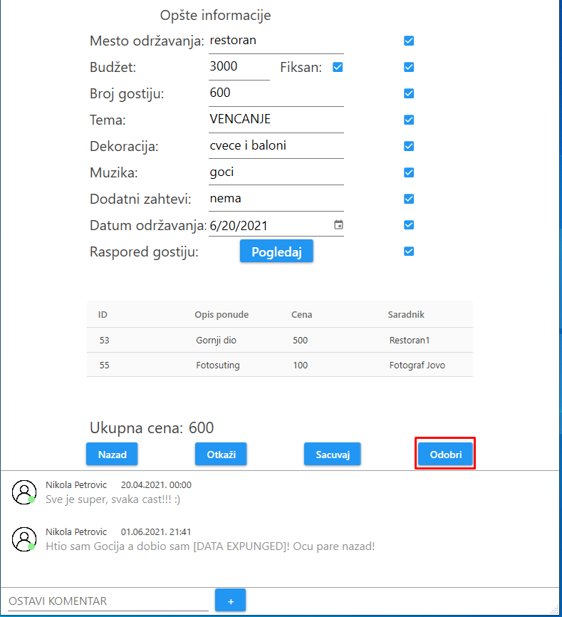

Nakon prijave klijenta, korisniku se prikazuju njegove manifestacije.
Prikaz manifestacije je odrađen tabelarno, gde je za svaku manifestaciju ispisana tema manifestacije, budžet, broj gostiju, datum održavanja, status manifestacije, kao i dugme "Pregledaj".
Sa desne strane prikaza se nalazi lista obaveštenja.
Klijent može dodatno da filtrira manifestacije po datumu održavanja manifestacije, kao i po temi.

Ukoliko organizator želi detaljniji prikaz specifične manifestacije, njemu je to omoguceno klikom na dugme "Pregledaj".
Ovaj prikaz sadrži sve opšte informacije za izabranu manifestaciju, što podrazumeva mesto održavanja, budžet (i da li je fiksan), broj gostiju, temu, dekoraciju, muziku, dodatne zahteve, datum održavanja, raspored gostiju i sve ukljucene ponude.
Pored opšte informacije, nalazi se i ukupna cena manifestacije, dugmad "Nazad", "Otkaži", "Sačuvaj" i "Odobri", lista komentara i polje za klijenta da ostavi svoj komentar.
Pritiskom na dugme "Pogledaj" pored labele "Raspored gostiju", organizatoru će se pojaviti prozor sa detaljnim rasporedom gostiju.
Ovaj prozor sadrži sliku šematskog plana restorana, gde su svi stolovi numerisani.
Ispod ove slike nalazi se detaljan opis svakog stola. Ovaj opis sadrži broj stola, kapacitet i gde se taj sto nalazi u restoranu. Pored toga napisana su i imena gostiju za tim stolom.
Klikom na dugme "Nazad", organizatoru se zatvara prozor.

Na samom dnu prozora nalazi se polje za ostavljanje komentara.
Klijent može da napise i komentar i da ga postavi pritiskom na dugme "+".
Ukoliko je status manifestacije U_IZRADI i ako je organizator poslao klijentu manifestaciju na uvid, pritom je klijent zadovoljan sa manifestacijom, može da je odobri klikom na dugme "Odobri".
Ukoliko je status manifestacije U_IZRADI ili NOVA, klijent može da izmeni sve stavke manifestacije izuzev broja gostiju, teme i rasporeda gostiju i pošalje svoj novi zahtev organizatoru klikom na dugme "Sacuvaj".
Ukoliko je status manifestacije U_IZRADI ili NOVA, klijent može da otkaže manifestaciju klikom na dugme "Otkaži".
Klikom na dugme "Nazad", klijentu se zatvara prozor za pregled manifestacije.